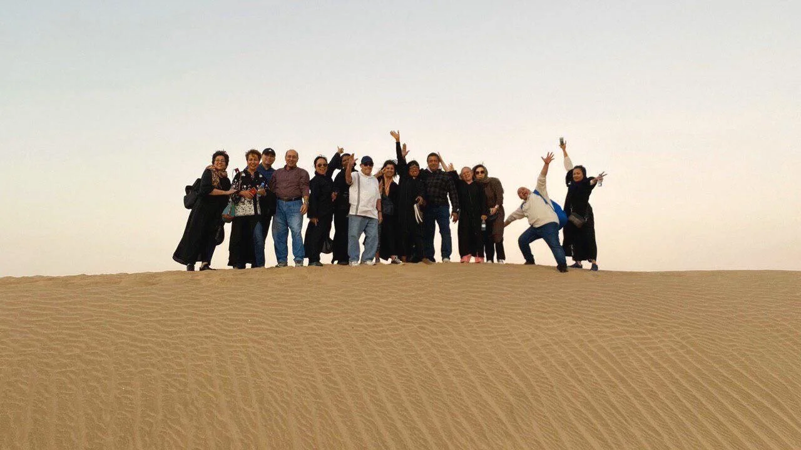

The vision of All Nations Adult (ANA) is to share God’s vision to ethnic churches in North America and to their native nations. ANA will raise diverse ethnic churches to go together to preach gospel to the ends of earth for rapid world evangelization.
ANA Vision School, ANA Field Operation, *ANA Mission Impact team, *ANA GAP Prayer
MIT visits the unreached nations to minister in various ways, including kid’s ministry, women’s ministry, men’s ministry, art, worship, and intercessory prayer etc. We go together to serve the nations in unity. This specific team doesn’t require VS graduates.
The GAP prayer warriors stand in the gap between God and the nations in prayer. When we pray together using God’s word, the Global Church will establish a spiritual alliance to overcome the end times. The GAP team dedicates an hour every day to lift up North America and the unreached nations.
CMM are ministry teams made up of members from a particular ethnic group to mobilize the churches of that ethnic group. Through CMM, the network of ethnic churches in North America is strengthened and God’s vision is shared. We pray that through CMM, each ethnic group’s homeland and the global diaspora will also be raised up in an alliance for mission revival.
Early Church Expedition & Mission (ECEM)
Early Church Expedition & Mission is a special pilgrimage to explore the early church sites of Asia Minor and to visit historical places such as Cappadocia, as well as the seven churches in the Book of Revelation. ECEM also includes special ministries and Field Operation. Through Early Church Expedition Mission, we witness God’s history, experiencing Paul’s great passion for mission, as we explore the cities and churches of Jesus’ time.
Pastor Field Operation (Pastor FO)
This specific FO is for pastors. The schedule includes FO and vision casting and diverse ministries for pastors to serve the nations.
For more information, email us at northamerica@intercp.org.
